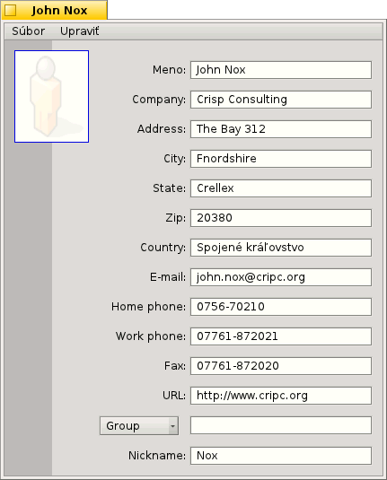
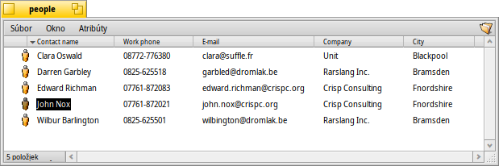

Slovenčina
Slovenčina Français
Français Deutsch
Deutsch Italiano
Italiano Русский
Русский Español
Español Svenska
Svenska 日本語
日本語 Українська
Українська 中文 ［中文］
中文 ［中文］ Português
Português Suomi
Suomi English
English Ľudia
Ľudia
| Panel: | ||
| Umiestnenie: | /boot/system/apps/People | |
| Nastavenia: | ~/config/settings/People_data |
Ľudia je jednoduchá databáza kontaktov využívajúca atribúty súborového systému Haiku na skladovanie adries a iných kontaktných informácií. Každý kontakt sa ukladá ako súbor jednej Osoby s dátami v samostatných atribútoch. Všetky sú indexované a dajú sa teda vyhľadať pomocou požiadaviek.
Atribút skupiny dole umožňuje zaradenie osoby do jednej alebo viacerých skupín. Užitočné pre hromadné správy určené niekoľkým ľuďom, ktorí napr. pracujú na konkrétnom projekte. Výsuvné menu ponúka všetky momentálne existujúce skupiny. Ak osoba patrí do viac ako jednej skupiny, názvy skupín sú oddelené znakom „,“.
Tieto súbory Osôb sa zvyčajne ukladajú do/boot/home/people/. Zoznam všetkých vašich kontaktov sa nachádza vo vašom priečinku s ľuďmi, kde sa zobrazujú všetky zaujímavé atribúty. Ak organizujete vaše súbory Osôb v rôznych priečinkoch, môžete ich dať vyhľadať pomocou požiadavky a zobraziť ich všetky v jednom okne.
S týmito súbormi môžete zaobchádzať ako s akýmkoľvek iným: Môžete ich zoraďovať podľa atribútov (aj sekundárne zoradenie podržaním SHIFT počas kliknutia) a samozrejme vymazať, duplikovať alebo ich premenovať. Dokonca aj kontaktné informácie možno priamo upravovať: Kliknutie na atribút (alebo ALT E) na úpravu funguje presne ako premenovanie súboru. Keď už ste v režime upravovania, stlačením TAB a SHIFT TAB preskočíte z jedného stĺpca do druhého.